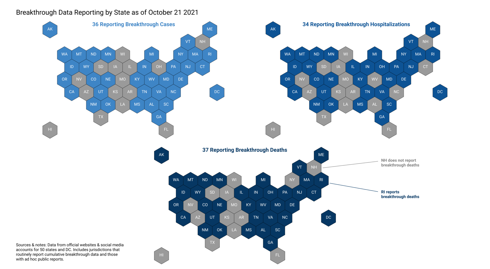
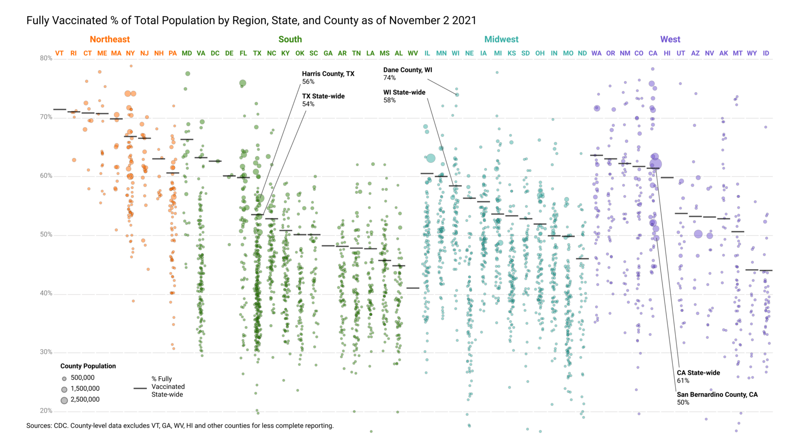
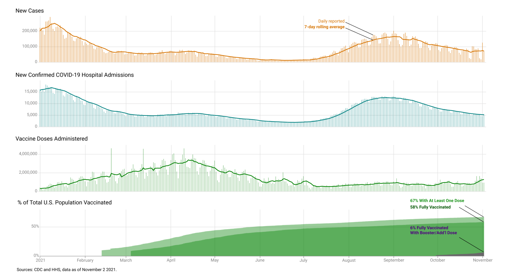
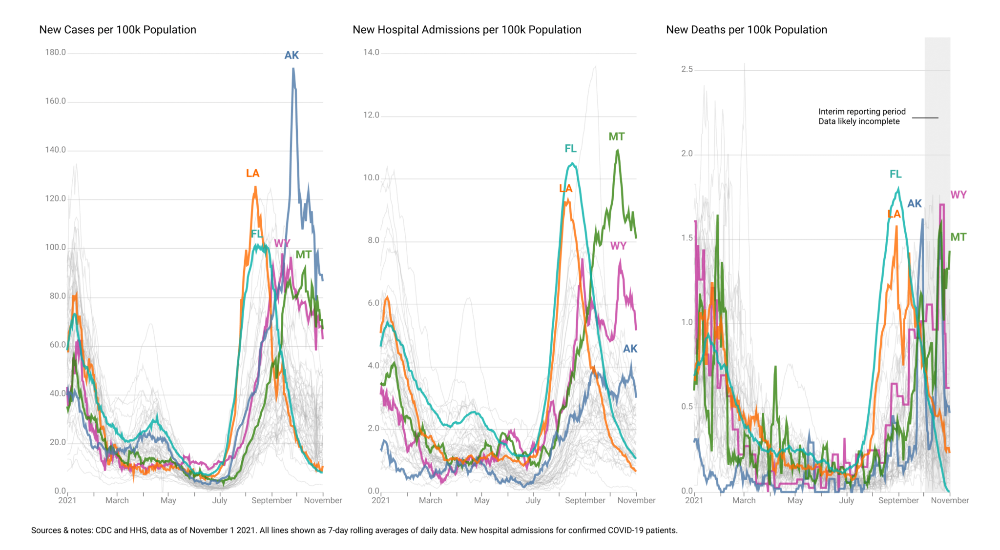

The Critical Challenge of Tracking Breakthrough Infections, and Why We Still Need Better Data Standards
Despite ample vaccine supplies, outbreaks among unvaccinated populations in the US and the appearance of the Delta variant promote infection in fully vaccinated individuals. These breakthrough infections must be carefully tracked.
This piece is originally published at rockefellerfoundation.org/blog/the-critical-challenge-of-tracking-breakthrough-infections-and-why-we-still-need-better-data-standards/
As the percentage of Americans considered fully vaccinated reached 58 percent, and COVID-19-related deaths surpassed three quarters of a million, concerns over breakthrough infections continue to grow. Breakthrough infections tend to be mild, and the risk of secondary transmission from these infections, while real, especially in high-risk settings, is low compared to those who have not been fully vaccinated. What do breakthrough cases mean in the context of ending this pandemic? The answer is neither simple nor short.
How are states reporting breakthrough infection data?
Between March 2020 and March 2021, The COVID Tracking Project collected data on COVID-19 tests, cases, hospitalizations, and deaths from all 50 US states, the District of Columbia, and five US territories. These metrics were inconsistently defined and reported by the 56 jurisdictions. The same seems to be true of the tracking of metrics associated with breakthrough cases, resulting in a similar patchwork of data and creating an incomplete picture of the true incidence of COVID-19 infections in fully vaccinated individuals in the US.

Breakthrough infections are rare, but important to understand.
Understanding breakthrough infections starts with knowing the “incidence” of breakthrough infections. Technically, incidence is the rate, or frequency of a disease in a select period of time. In order to properly calculate incidence, widespread testing–both diagnostic and viral genome sequencing–is critical, as well as the ability to link a positive test to the vaccination status of the individual. Right now, there isn’t a clear or standardized approach to linking these important pieces of information on state or national dashboards. These data would also help illuminate the real-world data of vaccine effectiveness and detect emerging viral variant trends.
The occurrence of breakthrough infections is tied to the dynamics and variability in vaccine uptake.
On a county-by-county level the pattern of vaccination in the US is far from uniform. While 9% of counties have rates below 30% of their total population fully vaccinated, only 3% have rates above 70% of their total population fully vaccinated, and vast disparities still remain along economic, racial, and geographic lines.

Within countries like the US, which have secured enough doses to vaccinate the entire population three times over, accessibility can still be difficult at the individual or local level. As of the beginning of November, more than 21% of US residents over the age of 12 remain unvaccinated. Some say they will eventually get the vaccine, yet as of October 2021, 16% of adult survey respondents said they will “definitely not” get the vaccine, for a variety of reasons. Even among the vaccinated, those with compromised immune systems because of age, disease, genetic conditions, or medical treatments may not generate a robust immune response to the vaccine and may thus be more susceptible to severe consequences from vaccine breakthrough. The safety of these vulnerable individuals depends on the vaccination status of those around them, and the risk of infection rises as transmission rates increase.

By mid-May 2021, the number of new daily cases was declining and nearly 37% of US residents had been fully vaccinated. On May 13, the US Centers for Disease Control and Infection (CDC) stated that it was safe for fully vaccinated individuals to go without masks indoors, and many state and local governments relaxed their policies on non-pharmaceutical interventions, such as indoor mask mandates. Vaccination rates had leveled off. Pandemic-weary individuals, both vaccinated and unvaccinated, began gathering maskless. As a result, localized outbreaks caused pockets of very high transmission rates, concentrated largely in areas with low vaccine uptake. In some areas, the case, hospitalization, and death rates have exceeded those of the January peak.The start of school at the end of the summer exacerbated the problem. The dominance of the highly transmissible Delta variant in these “hot spots” contributed to an increase in the number of infections in both vaccinated and unvaccinated individuals.

On a national level, the CDC announced that as of May 1, 2021, it would only investigate breakthrough infections that resulted in hospitalization or death. This change greatly reduced reporting of asymptomatic breakthrough infections, as well as symptomatic infections that were not serious enough to require hospitalization. This change in policy could make it more difficult to detect new virus variants before they become widespread.
Tracking mild or moderate vaccine breakthrough infections can be difficult for a number of reasons:
- Vaccinated people with mild symptoms may not think they have COVID-19, ascribing their symptoms to allergies, or the common cold, and may never be tested.
- Others may choose to test at home with an over-the-counter test, the results of which may never be reported, since that data is often literally trashed.
- Testing for asymptomatic breakthrough infections is often conducted for reasons such as requirements for workplaces, schools, or sports teams, hospital admissions, or potential contact with an infected person, and may therefore not be representative of the community at large.
- The way states and territories report and publish testing, reinfection, and breakthrough data is not standardized.
Despite these difficulties, even less-than-perfect data could provide insights into the state of the pandemic. At the very least, tracking hospitalizations and deaths in fully vaccinated individuals can reveal part of the problem. To date,36 US jurisdictions report breakthrough cases, 34 report breakthrough hospitalizations, and 37 report breakthrough infection related deaths. Unfortunately, not all states report this breakdown of data, for reasons including the inability to match hospitalization and immunization records.
Breakthrough tracking is much more useful when clinical and demographic data are also available.
Some jurisdictions in the US provide good data. The District of Columbia, for example, provides case, hospitalization, and death rates based on vaccination status. In addition, DC provides demographic information for breakthrough cases, including age, gender, race and ethnicity, as well as vaccine type, symptom status, chronology, and whether the case was confirmed or self-reported.
The CDC reports cases for 16 jurisdictions and deaths for 15 jurisdictions by vaccination status, vaccine manufacturer. Through COVID-NET, the CDC also reports on hospitalizations by vaccination status for 250 acute-care hospitals in 14 states.
When testing data can be linked to vaccination data, the result can be powerful.
For example, after an outbreak in Barnstable County, Massachusetts in July, the Massachusetts State Public Health Laboratory and the Broad Institute of the Massachusetts Institute of Technology and Harvard University were able to combine testing data with vaccination data and contact tracing to determine that 74% of the 469 cases they studied occurred in fully vaccinated individuals. Of the 133 samples sequenced, 89% were of the highly transmissible Delta variant. Their findings further suggested that fully vaccinated people who were infected could transmit the virus to others. These findings prompted the CDC to change its guidance on July 27 for vaccinated individuals to return to wearing masks indoors in areas where virus transmission was high. Further study showed that, although more than 1,000 people were involved, with evidence of transmission between vaccinated individuals, the outbreak subsided. Control of the outbreak was attributed to the high vaccination rate and a robust public health response involving extensive testing, contact tracing, and reimposition of indoor mask mandates.
The vast majority of COVID-19 cases, hospitalizations, and deaths occur in those who are not fully vaccinated.
Infections in fully vaccinated individuals are much less common, and tend to be milder. Nevertheless, breakthrough infections can serve as surveillance tools to detect potential new variants or declining vaccine efficacy. Information on vaccinated individuals with breakthrough cases is needed to determine what host or viral factors were involved in the breakthrough. Are breakthrough infections more common in those with certain underlying medical conditions? Is vaccine-induced immunity waning? Was the infecting virus the dominant strain in the area, or perhaps a novel variant?
As vaccine rollout for the 28 million children aged 5 to 11 in the US begins, there is hope that total vaccination rates will climb, providing more protection against infection in both vaccinated and unvaccinated individuals. Nationally and globally, however, equitable distribution of effective vaccines is needed to bring an end to the pandemic. Careful monitoring of infections in fully vaccinated individuals will help detect potential roadblocks to achieving that goal.